Макрос для создания таблицы сокращений в Word
Макрос для сбора сокращений в документе
Возможности макроса:
- сканирует весь документ и находит слова, состоящие полностью из заглавных букв (длиной от 2 символов);
- игнорирует слова в стилях «Заголовок» (чтобы слова вроде «ВВЕДЕНИЕ» или «INTRODUCTION» не попали в список);
- очищает найденные слова от знаков препинания;
- сортирует их по алфавиту и создаёт аккуратную таблицу из двух столбцов;
- выполняет расшифровку в рамках заданного словаря-источника.
Предварительные настройки
В MS Word должна быть включена функция разработчика. Для этого необходимо нажать на панели инструментов кнопку "Файл".
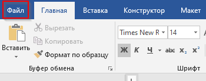
Выбрать в меню "Параметры"
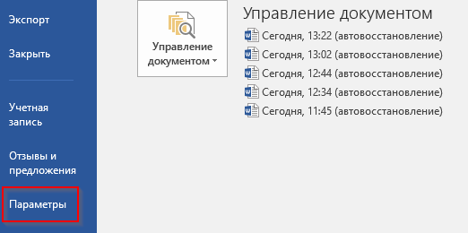
Выбрать раздел "Настроить ленту" и установить чек-бокс "Разработчик". Нажать кнопку "Ок" для сохранения изменений.
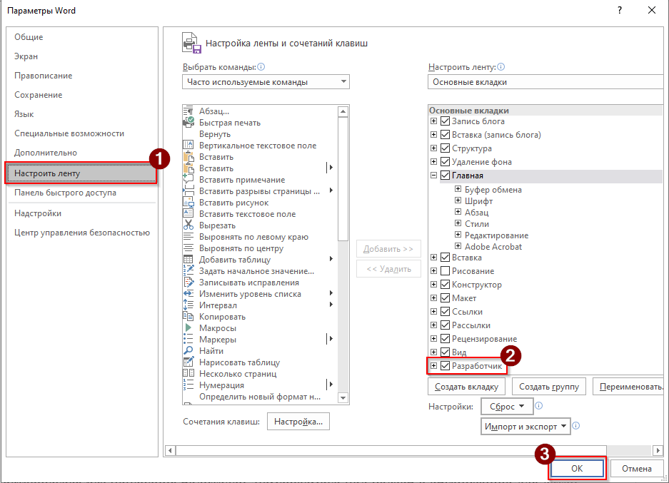
Во избежание конфликтов, рекомендуется настроить доверенный доступ к объектной модели VBA. Для этого во вкладке разработчик следует выбрать пункт "Безопасность макросов" и установить чек-бокс "Доверять доступ к объектной модели проектов VBA".
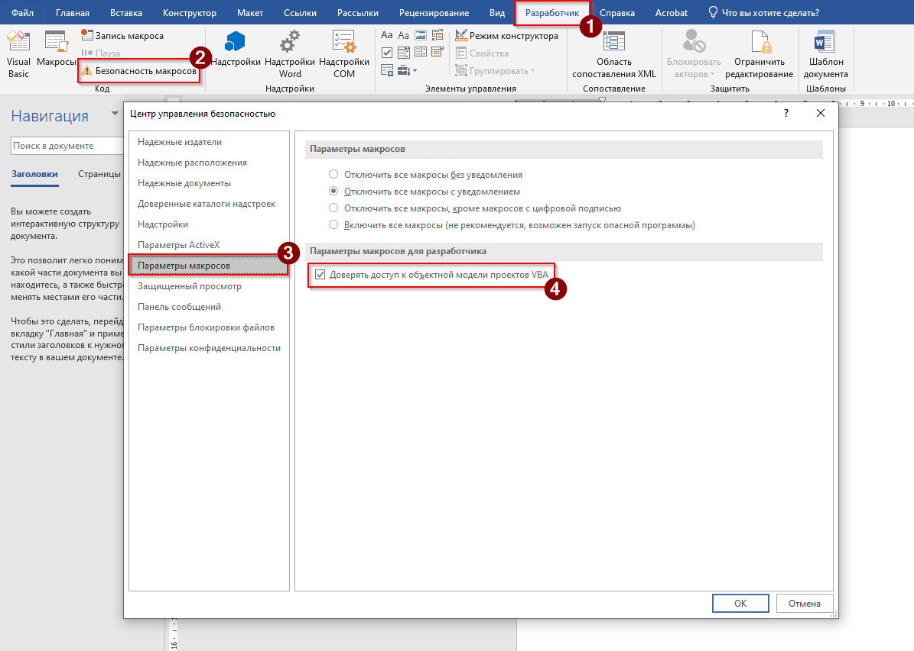
Установка и запуск макроса
В открытом документе нажмите комбинацию клавиш Alt + F11. В результате отобразится редактор VBA. В верхнем меню выберите Insert > Module (Вставка > Модуль).
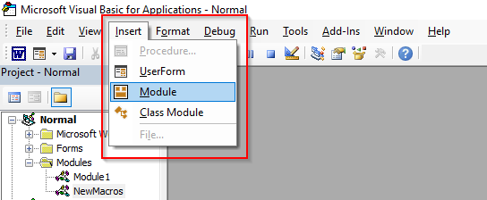
Для добавления макроса в следует скопировать приведённый код и вставить в модуль. Для сохранения изменений необходимо закрыть редактор VBA и вернуться в документ.
Чатобы запустить макрос следует нажать комбинацию клавиш Alt + F8, выбрать GenerateAbbreviationsTable из списка и нажать кнопку Run (Выполнить).
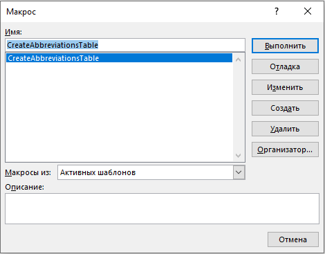
В результате отобразится диалоговое окно с предложение создать резервную копию документа. Для создания копии следует нажать кнопку "Да", для продолжения без резервной копии – "Нет".
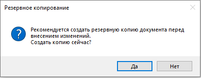
На следующем шаге отобразится окно для выбора словаря-источника с аббревиатурами и их расшифровками, на который будет полагаться макрос.
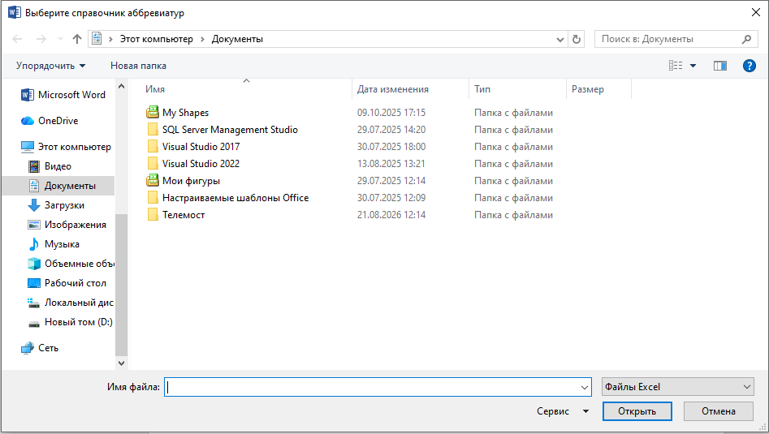
Словарь необходимо подготовить в формате .xls. В словаре необходимо задать таблицу для абрревиатур. Макрос сравнивает слова из первой колонки с найденными сокращениями из документа. При наличии полной схожести добавляет расшифровку из второго столбца.
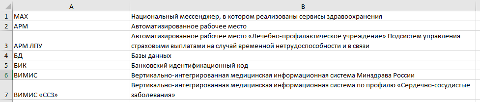
В случае успешного выполнения отобразится диалоговое окно с указание количества найденных аббревиатур.
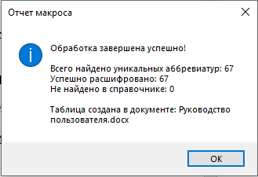
В результате будет сформирована таблица аббревиатур, найденных в документе.
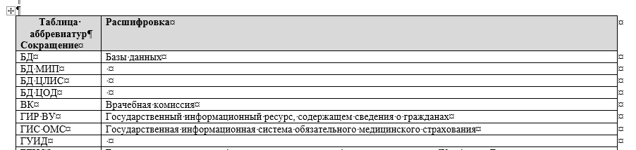
Код макроса
Код макроса:
Option Explicit
' Флаг защиты от повторного запуска
Private isRunning As Boolean
' =====================================================================
' ОСНОВНАЯ ПРОЦЕДУРА
' =====================================================================
Public Sub GenerateAbbreviationsTable()
On Error GoTo ErrorHandler
' Защита от повторного запуска
If isRunning Then
MsgBox "Макрос уже выполняется. Дождитесь завершения.", vbInformation, "Внимание"
Exit Sub
End If
isRunning = True
Application.ScreenUpdating = False
Dim doc As Document
Set doc = ActiveDocument
' 1. Запрос на создание резервной копии
Dim backupAnswer As VbMsgBoxResult
backupAnswer = MsgBox("Рекомендуется создать резервную копию документа перед внесением изменений." & vbCrLf & _
"Создать копию сейчас?", vbYesNo + vbQuestion, "Резервное копирование")
If backupAnswer = vbYes Then
Dim backupPath As String
backupPath = Replace(doc.FullName, ".docx", "_backup.docx")
backupPath = Replace(backupPath, ".docm", "_backup.docm")
If doc.Path = "" Then
MsgBox "Сначала сохраните документ на диск.", vbExclamation
GoTo CleanUp
End If
doc.SaveAs2 FileName:=backupPath
End If
' 2. Выбор справочника
Dim refPath As String
refPath = SelectReferenceFile()
If refPath = "" Then GoTo CleanUp ' Пользователь отменил выбор
' 3. Загрузка словаря
Dim dictRef As Object
Set dictRef = LoadDictionary(refPath)
If dictRef Is Nothing Then GoTo CleanUp
' 4. Поиск аббревиатур и сопоставление
Dim foundAbbrs As Object
Set foundAbbrs = ExtractAndMatchAbbreviations(doc, dictRef)
If foundAbbrs.Count = 0 Then
MsgBox "В тексте не найдено аббревиатур, подходящих под эвристику.", vbInformation
GoTo CleanUp
End If
' 5. Создание таблицы
Dim targetDoc As Document
Dim tbl As Table
Dim rng As Range
' Если документ защищен, создаем новый
If doc.ProtectionType = wdNoProtection Then
Set targetDoc = doc
Set rng = targetDoc.Content
rng.Collapse wdCollapseEnd
rng.InsertParagraphAfter
rng.Collapse wdCollapseEnd
Else
Set targetDoc = Documents.Add
Set rng = targetDoc.Content
End If
Set tbl = CreateReportTable(targetDoc, rng, foundAbbrs)
' 6. Форматирование таблицы
FormatTable tbl
' 7. Отчет
ShowReport foundAbbrs, dictRef, targetDoc
CleanUp:
Application.ScreenUpdating = True
isRunning = False
Exit Sub
ErrorHandler:
Application.ScreenUpdating = True
isRunning = False
MsgBox "Ошибка " & Err.Number & " в процедуре GenerateAbbreviationsTable:" & vbCrLf & _
Err.Description, vbCritical, "Сбой макроса"
End Sub
' =====================================================================
' ВЫБОР ФАЙЛА СПРАВОЧНИКА
' =====================================================================
Private Function SelectReferenceFile() As String
Dim fd As FileDialog
Set fd = Application.FileDialog(msoFileDialogFilePicker)
With fd
.Title = "Выберите справочник аббревиатур"
.Filters.Clear
.Filters.Add "Файлы Excel", "*.xlsx; *.xlsm; *.xls"
.Filters.Add "Текстовые файлы", "*.csv; *.txt"
.AllowMultiSelect = False
If .Show = -1 Then
SelectReferenceFile = .SelectedItems(1)
Else
SelectReferenceFile = ""
End If
End With
End Function
' =====================================================================
' ЗАГРУЗКА СПРАВОЧНИКА В СЛОВАРЬ
' =====================================================================
Private Function LoadDictionary(filePath As String) As Object
On Error GoTo ErrLoad
Dim dict As Object
Set dict = CreateObject("Scripting.Dictionary")
dict.CompareMode = vbTextCompare ' Регистронезависимое сравнение
Dim ext As String
' ИСПРАВЛЕНО: берем 5 символов для корректной проверки .xlsx и .xlsm
ext = LCase(Right(filePath, 5))
If ext = ".xlsx" Or ext = ".xlsm" Or Right(ext, 4) = ".xls" Then
' Обработка Excel (позднее связывание)
Dim xlApp As Object, xlWb As Object, xlWs As Object
Set xlApp = CreateObject("Excel.Application")
If xlApp Is Nothing Then
MsgBox "Не удалось создать объект Excel. Возможно, Excel не установлен или поврежден." & vbCrLf & _
"Пожалуйста, сохраните справочник в формате CSV или TXT и попробуйте снова.", vbCritical
Set LoadDictionary = Nothing
Exit Function
End If
xlApp.Visible = False
xlApp.DisplayAlerts = False
Set xlWb = xlApp.Workbooks.Open(filePath)
Set xlWs = xlWb.Sheets(1)
Dim lastRow As Long
lastRow = xlWs.Cells(xlWs.Rows.Count, 1).End(-4162).Row ' -4162 = xlUp
Dim i As Long
Dim abbr As String, decr As String
For i = 2 To lastRow
abbr = Trim(CStr(xlWs.Cells(i, 1).Value))
decr = Trim(CStr(xlWs.Cells(i, 2).Value))
If abbr <> "" And decr <> "" Then
If dict.Exists(abbr) Then
If dict(abbr) <> decr Then
dict(abbr) = dict(abbr) & " [Конфликт: " & decr & "]"
End If
Else
dict.Add abbr, decr
End If
End If
Next i
xlWb.Close False
xlApp.Quit
Set xlWs = Nothing: Set xlWb = Nothing: Set xlApp = Nothing
Else
' Обработка CSV/TXT
Dim fso As Object, ts As Object
Set fso = CreateObject("Scripting.FileSystemObject")
Set ts = fso.OpenTextFile(filePath, 1, False, -2) ' -2 = TristateUseDefault
' Определение разделителя по первой строке
Dim firstLine As String
firstLine = ts.ReadLine
Dim delim As String
Dim cCount As Long, sCount As Long, tCount As Long
cCount = UBound(Split(firstLine, ","))
sCount = UBound(Split(firstLine, ";"))
tCount = UBound(Split(firstLine, vbTab))
' ИСПРАВЛЕНО: Однострочный If с ElseIf недопустим в VBA.
' Переписано на многострочный блок с обязательным End If.
If tCount >= cCount And tCount >= sCount Then
delim = vbTab
ElseIf sCount >= cCount Then
delim = ";"
Else
delim = ","
End If
Dim parts() As String
Dim lineText As String
' Чтение данных
Do While Not ts.AtEndOfStream
lineText = ts.ReadLine
parts = Split(lineText, delim)
If UBound(parts) >= 1 Then
abbr = Trim(parts(0))
decr = Trim(parts(1))
If abbr <> "" And decr <> "" Then
If dict.Exists(abbr) Then
If dict(abbr) <> decr Then
dict(abbr) = dict(abbr) & " [Конфликт: " & decr & "]"
End If
Else
dict.Add abbr, decr
End If
End If
End If
Loop
ts.Close
End If
Set LoadDictionary = dict
Exit Function
ErrLoad:
MsgBox "Ошибка чтения справочника: " & Err.Description, vbCritical
Set LoadDictionary = Nothing
End Function
' =====================================================================
' ПОИСК АББРЕВИАТУР И СОПОСТАВЛЕНИЕ
' =====================================================================
Private Function ExtractAndMatchAbbreviations(doc As Document, dictRef As Object) As Object
Dim re As Object
Set re = CreateObject("VBScript.RegExp")
re.Global = True
re.IgnoreCase = False
' Эвристика: 2+ заглавных букв, далее опционально пробел/дефис/слеш и еще заглавные/цифры
re.Pattern = "(?:^|[^А-Яа-яЁё0-9])([А-ЯЁ]{2,}(?:[ \-\/][А-ЯЁ0-9]+)*)(?:[^А-Яа-яЁё0-9]|$)"
Dim text As String
text = doc.Content.text
Dim matches As Object
Set matches = re.Execute(text)
Dim resultDict As Object
Set resultDict = CreateObject("Scripting.Dictionary")
resultDict.CompareMode = vbTextCompare ' Регистронезависимое сравнение
' Черный список для исключения ложных срабатываний
Dim blacklist As Variant
blacklist = Array("НА", "ПО", "ДО", "ОТ", "КО", "СО", "ОБ", "ИЗ", "УЖ", "ЭХ", "АХ", "ОХ", "УХ", "ЫХ", "ЕЕ", "ОО", "АА", "ИИ", _
"ПРАЙМ", "АПИ", "АПИ ИЭМК", "БЕЗ", "ОК", "ООО", "ПРАЙМ ГРУП", "РЕГИОН БОТА", _
"РЕД ОС")
Dim m As Object
Dim abbr As String
Dim isBlacklisted As Boolean
Dim blItem As Variant
For Each m In matches
abbr = UCase(Trim(m.SubMatches(0)))
' 1. Проверка черного списка
isBlacklisted = False
For Each blItem In blacklist
If abbr = blItem Then
isBlacklisted = True
Exit For
End If
Next blItem
If Not isBlacklisted Then
' 2. НОВОЕ: Проверка длины каждого "слова" (части аббревиатуры)
' Если в одном слове больше 6 символов, не добавляем в таблицу
Dim tempAbbr As String
tempAbbr = Replace(Replace(abbr, "/", "-"), " ", "-")
Dim abbrWords As Variant
abbrWords = Split(tempAbbr, "-")
Dim isValidLength As Boolean
isValidLength = True
Dim wordPart As Variant
For Each wordPart In abbrWords
If Len(wordPart) > 6 Then
isValidLength = False
Exit For
End If
Next wordPart
' Если все части прошли проверку длины
If isValidLength Then
' 3. НОВОЕ: Явная проверка на дубликат.
' Dictionary уже не хранит дубликаты ключей, но проверка Exists
' гарантирует, что мы не будем повторно обрабатывать и добавлять
' уже найденную аббревиатуру в словарь результатов.
If Not resultDict.Exists(abbr) Then
If dictRef.Exists(abbr) Then
resultDict.Add abbr, dictRef(abbr)
Else
resultDict.Add abbr, " "
End If
End If
End If
End If
Next m
Set ExtractAndMatchAbbreviations = resultDict
End Function
' =====================================================================
' СОЗДАНИЕ ТАБЛИЦЫ
' =====================================================================
Private Function CreateReportTable(doc As Document, rng As Range, dataDict As Object) As Table
Dim tbl As Table
Set tbl = doc.Tables.Add(rng, dataDict.Count + 1, 2)
' Заголовки
tbl.Cell(1, 1).Range.text = "Сокращение"
tbl.Cell(1, 2).Range.text = "Расшифровка"
' Сортировка ключей
Dim keys As Variant
keys = dataDict.keys
SortArray keys
' Заполнение данных
Dim i As Long
For i = 0 To UBound(keys)
tbl.Cell(i + 2, 1).Range.text = keys(i)
tbl.Cell(i + 2, 2).Range.text = dataDict(keys(i))
Next i
Set CreateReportTable = tbl
End Function
' =====================================================================
' ФОРМАТИРОВАНИЕ ТАБЛИЦЫ
' =====================================================================
Private Sub FormatTable(tbl As Table)
tbl.Borders.Enable = True
tbl.AutoFitBehavior wdAutoFitContent
' Выделение заголовка
With tbl.Rows(1)
.Range.Font.Bold = True
.Range.Font.Color = wdColorBlack
.Shading.BackgroundPatternColor = wdColorGray15
End With
' Добавление подписи над таблицей
Dim rngTitle As Range
Set rngTitle = tbl.Range
rngTitle.Collapse wdCollapseStart
rngTitle.InsertParagraphBefore
rngTitle.InsertBefore "Таблица аббревиатур"
rngTitle.Paragraphs(1).Range.Font.Bold = True
rngTitle.Paragraphs(1).Alignment = wdAlignParagraphCenter
End Sub
' =====================================================================
' ВЫВОД ОТЧЕТА
' =====================================================================
Private Sub ShowReport(foundDict As Object, refDict As Object, targetDoc As Document)
Dim totalFound As Long, decrypted As Long, notFound As Long
Dim key As Variant
totalFound = foundDict.Count
For Each key In foundDict.keys
If foundDict(key) = "Не найдено в справочнике" Then
notFound = notFound + 1
Else
decrypted = decrypted + 1
End If
Next key
Dim msg As String
msg = "Обработка завершена успешно!" & vbCrLf & vbCrLf
msg = msg & "Всего найдено уникальных аббревиатур: " & totalFound & vbCrLf
msg = msg & "Успешно расшифровано: " & decrypted & vbCrLf
msg = msg & "Не найдено в справочнике: " & notFound & vbCrLf & vbCrLf
msg = msg & "Таблица создана в документе: " & targetDoc.Name
MsgBox msg, vbInformation, "Отчет макроса"
End Sub
' =====================================================================
' ВСПОМОГАТЕЛЬНАЯ ФУНКЦИЯ: СОРТИРОВКА МАССИВА
' =====================================================================
Private Sub SortArray(arr As Variant)
Dim i As Long, j As Long
Dim temp As String
For i = LBound(arr) To UBound(arr) - 1
For j = i + 1 To UBound(arr)
If arr(i) > arr(j) Then
temp = arr(i)
arr(i) = arr(j)
arr(j) = temp
End If
Next j
Next i
End Sub